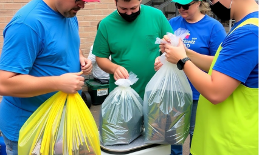

From a small neighborhood initiative, we have grown into a
city-wide movement offering a sustainable future for Kota
Batu.
city-wide movement offering a sustainable future for Kota
Batu.
Starting early Sunday morning, groups mobilized in 24 distinct
zones. The primary focus was on clearing plastic
waste from critical waterways and public spaces, areas that have seen increased pollution due to recent tourism
surges. The integration of local waste bank units ensured that collected materials were immediately sorted and
processed.
waste from critical waterways and public spaces, areas that have seen increased pollution due to recent tourism
surges. The integration of local waste bank units ensured that collected materials were immediately sorted and
processed.
